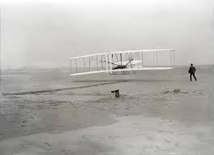

First Blog Post
History Of Aviation
The scene: Windswept sand dunes of Kill Devil Hills, 4 mi south of Kitty Hawk, North Carolina. The time: About 10:35 AM on Thursday, December 17, 1903. The characters: Orville and Wilbur Wright and five local witnesses. The action: Poised, ready to make history, is a flimsy, odd-looking machine, made from spruce and cloth in the form of two wings, one placed above the other, a horizontal elevator mounted on struts in front of the wings, and a double vertical rudder behind the wings . A 12-hp engine is mounted on the top surface of the bottom wing,slightly right of center. To the left of this engine lies a man-Orville Wright-prone on the bottom wing, facing into the brisk and cold December wind. Behind him rotate two ungainly looking airscrews (propellers), driven by two chain-and-pulley arrangements connected to the same engine. The machine begins to move along a 60-ft launching rail on level ground. Wilbur Wright runs along the right side of the machine, supporting the wing tip so it will not drag the sand. Near the end of the starting rail, the machine lifts into the air; at this moment,John Daniels of the Kill Devil Life Saving Station takes a photograph that preserves for all tiime the most historic moment in aviation history (see Fig. 1.2). The machine flies unevenly, rising suddenly to about 10ft, then ducking quickly toward the ground. This type of erratic flight continues for 12 s, when the machine darts to the sand, 120 ft from the point where it lifted from the starting rail. Thus ends a flight that, in Orville Wright's own words, was ''the first in the history of the world in which a machine carrying a man had raised itself by its own power into the air in full flight, had sailed forward without reduction of speed, and had finally landed at a point as high as that from which it started." The machine was the Wright Flyer I, which is shown in Figs. 1.1 and 1.2 and which is now preserved for posterity in the Air and Space Museum of the Smithsonian Institution in Washington, District of Columbia. The flight on that cold December 17 was momentous: It brought to a realization the dreams of centuries, and it gave birth to a new way of life. It was the first genuine powered flight of a heavier-than-air machine. With it, and with the further successes to come over the next five years, came the Wright brothers' clear right to be considered the premier aeronautical engineers of history. However, contrary to some popular belief, the Wright brothers did not truly invent the airplane; rather, they represent the fruition of a century's worth of prior aeronautical research and development. The time was ripe for the attainment of powered flight at the beginning of the 20th century. The Wright brothers' ingenuity, dedication, and persistence earned them the distinction of being first. The purpose of this chapter is to look back over the years that led up to successful powered flight and to single out an important few of those inventors and thinkers who can rightfully claim to be the first aeronautical engineers. In this manner, some of the traditions and heritage that underlie modern aerospace engineering will be more appreciated when we develop the technical concepts of flight in subsequent chapters.
wright-brothers
AirandSpace
Loc
Loc
Loc
Loc
Very Early Developments
Since the dawn of human intelligence, the idea of :flying in the same realm as birds has possessed human minds. Witness the early Greek myth of Daedalus and his son Icarus. Imprisoned on the island of Crete in the Mediterranean Sea, Daedalus is said to have made wings fastened with wax. With these wings, they both escaped by flying through the air. However, Icarus, against his father's warnings, &w too close to the sun; the wax melted, and Icarus fell to his death in the sea. All early thinking about human flight centered on the imitation of birds. Various unsung ancient and medieval people fashioned wings and met with sometimes disastrous and always unsuccessful consequences in leaping from towers or roofs, flapping vigorously. In time, the idea of strapping a pair of wings to arms fell out of favor.lt was replaced by the concept of wings flapped up and down by various mechanical mechanisms, powered by some type of human arm, leg, or body movement. These machines are called ornithopters. Recent historical research has revealed that Leonardo da Vinci was possessed by the idea of human flight and that he designed vast numbers of ornithopters toward the end of the 15th century. In his surviving manuscripts, more than 35,000 words and 500 sketches deal with flight. One of his ornithopter designs is shown in Fig. 1.3, which is an original da Vinci sketch made sometime between 1486 and 1490.1t is not known whether da Vinci ever built or tested any of his designs. However, human-powered flight by flapping wings was always doomed to failure. In this sense, da Vinci's efforts did not make important contributions to the technical advancement of flight. Human efforts to fly literally got off the ground on November 21, 1783, when a balloon carrying Pilatre de Rozier and the Marquis d' Arlandes ascended into the air and drifted 5 mi across Paris. The balloon was inflated and buoyed up by hot air from an open fire burning in a large wicker basket underneath. The design and
New posts
123456
Satistics